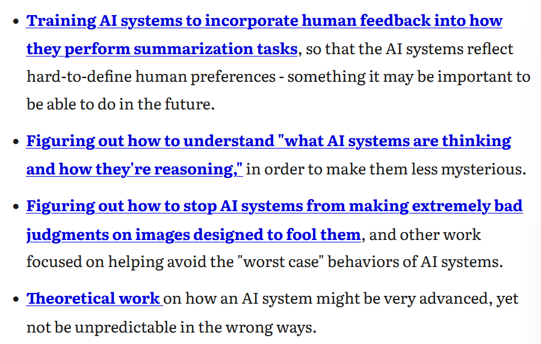

1 Intro
This is the first post in a series about AI safety (AIS). I am apart of the effective altruism AI discussion group at Durham. These posts will contain my rewritten notes of and comments about the core readings.
2 Course Details
We will be following the AGISF curriculum at https://www.agisafetyfundamentals.com/ai-alignment-curriculum. This includes 8 weeks of readings and discussions, followed by a final project. The Core readings and homework can be found here.
3 Homework
For week 1, the homework is to read all 5 core readings in Week 1 of the AGISF Curriculum.
3.1 Core Reading 1: Four Background Claims
3.1.1 Claim 1: Humans have a very general ability to solve problems and achieve goals across diverse domains.
We generally call this intelligence/general intelligence but there’s isn’t a former definition for intelligence. This makes sense because unlike a definite property like height, it’s impossible to define how intelligent a human is let alone make a mathematical definition. Whatever intelligence may be, we might be able to replicate it in code, or maybe not. Do we even need to know what intelligence is to replicate it?
Alternative view: General intelligence doesn’t exist. Actually humans just have a collection of separate specific modules/functions that add up together to seem as if we have a general problem solving ability. Computers can’t get general intelligence, they can only get better at specific tasks. Even if this view was true, what’s theoretically stopping a computer from getting good at enough separate specific tasks until, like a human, it seems to have general intelligence?
Short response: The author finds this “disparate modules” hypothesis implausible because humans can gain skill in areas that early humans (I presume evolved for specific tasks) have no experience in (I presume tasks unevolved for).. He thinks general intelligence probably comprises from a number of different cognitive modules and interactions, isn’t not just one module called the general intelligence module that humans have. As a result of these modules and interactions, humans have cognitive adaptability more so than chimpanzees for example.
I agree that general intelligence probably comprises from a number of different cognitive modules and their interactions. It can’t be a specific module that is just general intelligence that is well defined and can be replicated easily. However, his rebuttle of the disparate modules hypothesis doesn’t exactly make sense to me. Even if we’ve not been evolved to do these new tasks, if we were evolved a large enough amount of task specific modules, then we can learn to do them anyway?
Why this claim matters: because humans became dominant because they are more intelligent. We share chimpanzees as ancestors, then a few million years later gained this ‘general intelligence’. A few million years by evolutionary standards isn’t very long. This implies there a few key ideas/changes between chimpanzees and the first humans that result in our intelligence. If we knew these, then perhaps we could make very intelligent AI systems.
3.1.2 Claim 2: AI systems could become much more intelligent than humans.
At MIRI, they don’t have conviction about when smarter-than-human AI will be developed, but expect that a) they will eventually be developed (probably within a century) and b) they can become significantly more intelligent than any human.
Alternative view 1: The human brain does something special that can’t be replicated by a computer.
Short response: Brains are physical systems. If certain versions of the Church-Turning thesis hold, then computers theoretically can replicate the functional input/output behaviour of any physical system, including the brain. I think this means that the brain is a physical system, a collection of physical objects that take an input and form and output, a computer can replicate the process: it can take the same input(s) and produce the same output(s). Even if there was something like qualia, the qualitative component of consciousness, that can’t be replicated, it doesn’t matter, unless it’s important for our brain’s problem-solving computation process of taking an input and giving an output. Computers can replicate the brain’s problem-solving computation process and problem solve/gain intelligence regardless.
(The Church-Turning thesis states that a function on the natural numbers can be calculated by an effective method if and only if it is computable by a Turing machine. A turning machine can implement any computer algorithm.)
Alternative view 2: That the algorithms at the root of general intelligence are too complex for human beings to be able to program for many centuries.
Short response: Looking at the previous claim’s conclusion, the cognitive advantage/general intelligence in humans took a extremely short evolutionary time frame. The general intelligence part of humans that sets us apart from less intelligent species mustn’t be extremely complicated because of this. The building blocks of general intelligence must be present in chimpanzees too, but they didn’t have the shift we did. I’m not sure I agree because I question the assumption that evolutionary time reflects complexity.
Alternative view 3: Humans are already at or near peak physically possible intelligence. Thus, although we may be able to build human-equivalent intelligent machines, we won’t be able to build superintelligent (smarter-than-human) machines.
Short response: It seems very possible within the boundaries of physics to run a computer simulation of the human brain thousands of times faster than a real one. I think it really depends what we mean by speed. Does speed matter to reasoning? If there a ideal speed for the human brain that results in the best reasoning? Can a computer reach that speed reliably and so outreason a human?
Computers can probably use computational resources more effectively than humans do, even at the same speed, if we program them correctly. Overall I think that humans are very suspect to issues with reasoning such as stress or bias, so if we can build human-equivalent intelligent machines, surely we can optimise them against these to make them smarter-than-humans.
Why this claim matters: Already we know human-designed machines are orders of magnitudes better than any biological creature we know of at certain tasks. For example, cars and horses. We can build machines better than animals for tasks we care about, and cut out biological mechanisms irrelevant for it such as reproduction. We could build machines with the task of (narrow, even if only for specific tasks) intelligence that are better than humans without biological mechanisms like stress or bias tainting reason. This can solve the world’s biggest problems by scientific and technological innovation, improving the world at unprecedented pace.
3.1.3 Claim 3: If we create highly intelligent AI systems, their decisions will shape the future.
Smarter-than-human AI will shape the environment like humans have, as the most intelligent beings.
Alternative view: Our environment is too competitive for AI to outcompete us.
Short Response: Smart AI will be able to outcompete humans by having the knowledge and capability to do things we would never. In the past, the deciding factor between human conflict has been intelligence. For smarter-than-human AI, that intelligence would lead to outcompeting humans.
Why this claim matters: If think AI decisions will shape the future, then obviously we need to think about this.
3.1.4 Claim 4: Highly intelligent AI systems won’t be beneficial by default.
In order to build AI systems that will benefit humanity, we need to prioritise solve a number of technical challenges over building more powerful and general AI.
Alternative view: As humans became smarter, we’ve become more peaceful to eachother. Less war etc. AI will do the same as it figures out our values, and do them better than we do.
Short response: Smart enough AI can figure out our intentions and values, but that doesn’t mean they will automatically carry them out for us.
If we want values of compassion and peace, we have to program them. Setting a goal like ‘cure cancer’ could easily go wrong.
Why this claim matters: We could solve some of the world’s largest problems with AI. But to do so, we need more than just computational power, we need AI that takes human values into account and faithfully executes them, or else things can and will go wrong.
3.1.5 Conclusion
Currently I learn towards the four claims, or at least their sentiment. For example, maybe general intelligence doesn’t exist, or can’t be replicated, but AI still can outperform humans, have an immense impact, and won’t be beneficial by default.
3.2 Core Reading 2: AGI safety from first principles (Ngo, 2020)
(from section 1 to end of 2.1)
This report is from 2020, so I wonder how dated it is, especially regarding image generation advances.
3.2.1 1. Introduction
AIs will eventually become more capable than us. If they don’t want to obey us, we’ll become Earth’s second most powerful ‘species’, and lose control over the future.
3.2.2 2. Superintelligence
Let’s define intelligence as the ability to achieve goals in a wide range of environments.
Task-based approach: agents that can do well at many tasks because they have been optimised for each individual task.
Generalisation-based approach: agents that can understand unseen tasks with little no task-specific training, the understanding comes from experience from previous tasks.
3.2.3 2.1 Narrow and general intelligence
Task-based approach:
The task-based approach is based on how computers are powerful and flexible, but we need to create detailed instructions (code) for them to do great things.
Similarly, ML model currently can do great tasks (e.g. Starcraft, Go), but need detailed experience in it first.
Generalisation approaches:
NLP models like GPT-3 can perform great results on language tasks that it has not been trained on. Transfer learning (with little/no finetuning) is an example of generalisation. The model can do unseen tasks with little/no experience from learning general concepts like an understanding of the syntax and semantics of a language!
Humans can make great progress on the scale of years or decades because of how strong generalisation is. The ability to learn new tasks based on experience, and even share information about new tasks to other humans, has made us very powerful.
Both: They are more like a spectrum than discrete approaches.
AlphaZero trained on data of itself playing against itself, and we evaluate how well it did (task-based because it has been trained/optimised/evaluated on same data). But we made it play against humans (generalisation-based because it has been trained/optimised not on human data and now it is evaluated on unseen human strategies). This example lies on a spectrum between the two approaches.
The task-based approach might outperform the generalisation based approach, atleast in the short term, on tasks we care about. For example, driving cars. But on other too complex abstract tasks, like being a CEO in a social human interconnected world, might be better with generalisation based approaches.
This is true because normally we need a lot of training data to get an AI to do a task well, and training data for something as abstract as a CEO isn’t easy to come by.
Doing the entire thing as just ‘CEO training data’ to output ‘CEO actions’ is no good, but splitting up the CEO’s tasks (writing speech, choosing who to hire, etc) could be done with task-based AI, as an aid to a human CEO. Combining all these tasks together for a full task based AI is no easy feat however.
We could get superhuman CEOs with generalisation based AI by training it to develop a range of useful and abstract cognitive skills. For example, by living in a simulated world. Even if it’s very different to our own world, the planning and learning concepts developed will transfer over. This is similar to smart human scientists who transfer fields.
A potential obstacle to generalisation-based AI becoming successful is about the features of the environment being correct for development. For the case of humans, we needed a ‘social arms race’ to give us enough social intelligence to develop large-scale cultural transmission and communities. However, the state of the environment for AI could be purposely modified to be correct for development.
Another obstacle could be about the human brain being too specific for an AI to replicate well enough. For example, the quantum properties of neurons. However, the human brain operates under conditions that are too messy for it to be plausible for our intelligence to rely on these specific complex conditions. In other words, the too-hard-to-replicate features of the human brain probably don’t matter to our intelligence, so AI can develop regardless. Consciousness might be too-hard-to-replicate, but does it matter for intelligence?
With these obstacles out the way, the author believes it is very likely that eventually we will create AIs that can generalise well enough to perform as well as humans on a wide and varied range of tasks, including abstract ones like being a CEO.
These AIs are called artificial general intelligences, or AGIs.
3.3 Core Reading 3: More is different for AI (Steinhardt, 2022)
(only introduction, second post, third post)
3.3.1 More Is Different for AI
Two approaches about ML safety risks: the Engineering approach and the Philosophy approach.
Engineering tends to be bottom-up and in touch with current state-of-the-art systems. It looks at issues that are already major problems or are expected to become them.
Philosophy tends to be more sci-fi movie like and abstracted and ambitious. It’s about the limits of advanced systems, and not about current ones.
They both agree misaligned objects are an important problem, for differing reasons. Philosophy is more based on theoretical problems that could or could not exist in the future.
From the author’s experience, people from the two camps disagree with eachother strongly. Coming in from Engineering, they believe philosophy is significantly underrated by most ML researchers. Simultaneously, the engineering worldview actually assigns/implies a lot of weight onto thought experiments. However, philosophy undervalues empirical data.
Overall, we don’t have a single good approach to thinking about AI risk. Both have their issues.
3.3.2 Future ML Systems Will Be Qualitatively Different
Philip Anderson wrote “More is Different”, in it, he argues quantitative changes can lead to qualitatively different and unexpected phenomena.
For example, individual water molecules aren’t wet. Enough water molecules are.
Isn’t this just the same as emergent behaviour?
Some changes occur very sharply: after a certain point there is a sharp phenomena. This are called phase transitions.
There are a few ML areas where “More is Different” or emergent behaviour apply:
Cheap enough hardware allowed the creation of previously impossible ML architectures like large neural networks.
Sometimes accuracy changes with training strangely. For example, the model doesn’t improve for 90,000 steps but suddenly explores at 100,000! In other words, the phase transition is at 100,000 steps.
The existence of phase transitions damages the engineering worldview for predictions because it goes completely against extrapolating previous experience. If not after 90,000 steps, why after 100,000 steps? Emergence requires some adoption of the philosophy worldviews. Regardless, the engineering worldview gets surprisingly far.
3.3.3 Thought Experiments Provide a Third Anchor
It’s hard to predict the future of AI because of emergent behaviour. To remedy this, we think in term of “anchors” reference classes that are broadly analogous to future ML systems. We then use them to make predictions.
Anchors are reference classes. Let’s all the reference class/anchor for current ML systems as the current ML anchor. It’s good, but fails to account for emergent behaviour.
Other anchors? Intuitive ones like things humans can do but ML can’t do easily. Liker reading a textbook to learn a new subject, or long-term planning (achieving long term goals). We’ll call this the human anchor.
The issue with this is that it risks thinking about model acting too much like humans would.
Another anchor, the optimisation anchor, which is associated with the philosophy worldview. Think of ML as a ideal optimiser and ask what such a thing would do in a given scenario. The issue is it ignores practicalities and the fact that the optimisation process can work in a more ‘natural’ way than an ideal one.
Other anchors to think about how ML acts include evolution and economic behaviour. There’s also biological systems like the immune system, the brain, ecosystems etc. Emergence often appears in these complex systems, so studying them might be a good way to understand emergence in ML.
Thought experiments and anchors are good at predicting problems, but solving them requires an engineering worldview.
In-context learning refers to learning done in the field. Like how humans learn on the job, not at uni. E.g. GPT-3’s ability to do few-shot learning.
3.4 Core Reading 4: “Most important century” series summary (Karnofsky, 2021a)
The “Most import century” series of Blog posts argues the 21st century could be the most important for humanity because of the development of advanced AI.
3.4.1 Why?
- Because advances in technology could result anywhere between utopia and dystopia.
- Because these advances could be sooner than we think. The relevant kind of AI looks like it will be developed in this century.
Right now, humanity is at a turning point. Our actions now could very well dictate the livelihoods of the many more to follow. But we aren’t ready to carry out the actions we should take.
Exponential growth means that this may be the most important century without us realising easily. We went from more growth in millions of years than billions. Then more growth in hundreds of years than millions of years. Perhaps with AI, we could get more growth in hundreds of years in decades.
We have no idea what will happen in the ‘long-run’ future. Maybe a few mega-corps own everything and the population are radically exploited in ways previously impossible. Maybe instead we live in a world where nobody has to work and is free to pursue their own passions. We think of this as long off, so don’t bother discussing it.
However, it could come sooner than we think. Standard economic growth models imply that technology that can improve innovation improves growth. Having more economic growth leads to more resources, which leads to more innovative technology, which leads to more growth.
AI could be the key innovation that makes this cycle break out of orbit. If it could fully automate innovation, then an ‘economic singularity’ would occur with productivity reaching infinity.
In history, more growth lead to more innovation (from more people existing, more resources available etc), which lead to more growth. However, recently this cycle has been broken because both the number of people created from growth leveled off, and the resources created from growth went to a select few (rich people) instead of more people. With a similar number of people and worse resource distribution, the pace of ideas slows down and so does growth.
But what if AI could do this cycle. An AI that gets resources, improves itself, gets more ideas, and gets more resources as a result.
Such an AI is called PASTA: Process for Automating Scientific and Technological Advancement. It would have to be something akin to AGI.
One forecasting method states:
But no AI model to date has even had 1% of the number of computations as the human brain (but how many of the brain’s computations are necessary for general intelligence?) Also, just by looking at how quickly computational power is increasing, by the end of the century, will it be possible to train human-brain-sized models?
So PASTA-like AI is more likely than not this century, atleast nearing the end of it.
There is no scientific field of “AI forecasting” nor expert consensus on the issue. This means it’s hard to be confident that the most important century hypothesis is true, but we should assume it is to be prudent, atleast until a mature AI forecasting field develops.
Examples of things this field cost include are:

3.5 Core Reading 5: Forecasting transformative AI: the “biological anchors” method in a nutshell (Karnofsky, 2021b)
When will PASTA, capable of doing scientific research automatically, develop? The quicker the more important this decade is.
Bio Anchors is an approach to this to predicting this. It’s a complex approach with a lot of assumptions and estimates. It’s also not as trustworthy as other models.
Nonetheless, it’s the ‘best guess estimate’ we have. This century will likely see us hit some the more extreme milestones in the report.
Modern AI learns by training. By trial and error. Generally, the training process is more costly for larger AI models and more complex tasks.
Based on the usual patterns on how expensive training is, how much would an AI model as ‘big’ as the human brain cost? And when? From all of Bio Anchors approaches, there is a high level of PASTA/transformative AI occurring: a 70-80% weighted average of transformative AI occurring by 2100.
Bio Anchors’ different approaches are called anchors. Neural net anchors are the most used for prediction.
There are two ways to train models:
Program in extremely specific step-by-steps instructions. Hardcode them in.
Train by trail and error. This is just ML. Just training to update weights. Meta learning is training how to train.
Trail and error is a brute-force approach and expensive. It requires a lot of data, and a lot of processing power.
The cost how train this way depends on the model size, the training data, and the task. For example, a single model now in 2021 has already taken millions of dollars.
Bio Anchors asks when it can be possible to train a model using trial and error to do the hardest tasks humans can do. Like doing research and science.
It estimates how expense training costs based on just the model size and task type.
In general, a larger model with more parameters can learn more complex tasks, but is more expensive. We estimate today’s AI systems are sometimes as big as insect brains, but never as big as mouse brains. Right now, not even 1% as big as human brains. But it is up to debate how to estimate and compare brain size to AI model size.
Bio Anchors assumes a transformative AI must be atleast 10x times as big as human brains to do complex tasks, because AI brains will be less efficient than human brains.
The most contentious part of Bio Anchors is its approach to finding the cost for tasks. There are some tasks a human can do in a second, like image classification. Other tasks like logic puzzles take minutes. Some others take years, like writing science papers. It assumes that the longer tasks will be more vastly costly to train an AI to do.
However, this isn’t as simple. Many of long tasks like writing a paper can be broken into shorter tasks like writing sentences. If an AI can do all short subtasks quickly, can’t it do the long task quickly? And in this case, the AI doesn’t need even need any training of the longer task to do it!.
The question is, are the hardest human tasks able to be decomposed to shorter easy tasks?
How expensive will an AI model size 10x the human brain, trained on a task where each ‘try’ took days, weeks, or months of ‘thinking’ cost?
Today, the estimate is roughly a million trillion dollars.
But advances in hardware and software, and the growing role of AI in the economy, might make this lower and easier attained.
Bio Anchors states that transformative AI will be developed when this funding amount is met.
Bio Anchors simplifications can be too aggressive (too soon) and too conservative (too late).
Too aggressive:
There’s no reason to think that DL can learn everything a human can do with just trail and error training.
We need fundamental new approaches to AI to imitate human reasoning. Humans have ‘true understanding’. AI does ‘pattern recognition’.
But is there actually a difference between the two? If there isn’t, then humans aren’t special, AI can. We don’t have a good definition of ‘true understanding/reasoning’ to base this argument on.
The breakthroughs needed for Bio Anchors to be wrong have to be more than what AI scientists can do. In the scale of multiple decades, researchers might be able to find whatever we’re missing in today’s DL techniques.
Bio Anchors assumes enough computing power will result in transformative AI. But in fact, money alone isn’t enough. It requires human intelligence, will, innovation, and a way to setup the trail and error process correctly.
Conservative:
Perhaps we don’t need to get it to do full trial and error. We can hardcode some things in and result it in much higher efficiency.
We could find better ways of doing trial and error training, like developing meta-learning. Over time, AI becomes bigger in the economy and different AI gets better at different real-world tasks. At some point, we can integrate these different task-specific AI with their own training together. AI which isn’t nearly as good as PASTA, could be so good at doing tasks economically, resulting in funding increasing exponentially.
The most important tasks AI needs training to do could be actually easier compared to what Bio Anchors assumes.
Bio Anchors Conclusions. That there’s a <10% chance of transformative AI by 2036. 50% by 2055, 80% by 2100.
AI systems might be able to be trained soon to be anything humans can do within a second of thought. Like humans who speak with less than 1 second of thought in speaking. Only very recently, AI models have increased in size so much.
Bio Anchors is consistent with what we observe from AI today. We’re getting close to the time where AI model is as big as the human brain. Mainly, the funding argument is simple to believe why it will explode.
In order to create transformative AI the computation done in all of evolution must be recreated. This is very conservative. The idea being that whatever is unique to human brains should be rediscoverable if we can rerun natural selection.
Pros and Cons of biological anchors for predictions on transformative AI:
Cons:
There are some extremely uncertain estimates and assumptions.
Can AI learn key tasks just using trial and error? How to compare AI models size with animals and humans. How to estimate task time for to predict expensive. How to estimate future advances in hardware/software. How to estimate funding for AI labs.
We shouldn’t consider the forecasts to be reliable given this.
Pros:
Every assumption and estimate can be explained discussed and over time, tested. This is very valuable.
The framework can give a way of thinking about that simultaneously covers:
a) the fact that AI systems a decade ago aren’t impressive,
b) the fact that AI systems now can do impressive things but not what humans can do,
c) the fact that the next few decades could result in transformative AI being developed.
Bio Anchors concludes that, in the coming decades, AI models will be developed with the ‘size’ of the human brain.
We can compare Bio Anchors framework and compare it to what we see and learn better predictions of timelines as a result.
E.g. How much can trial and error learn?
How the ‘size’ of the AI models completes tasks compared to similar animal sized brains.
Are AI models getting better at the rate the report currently projects?
There is no robust expert consensus on this topic.